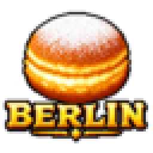
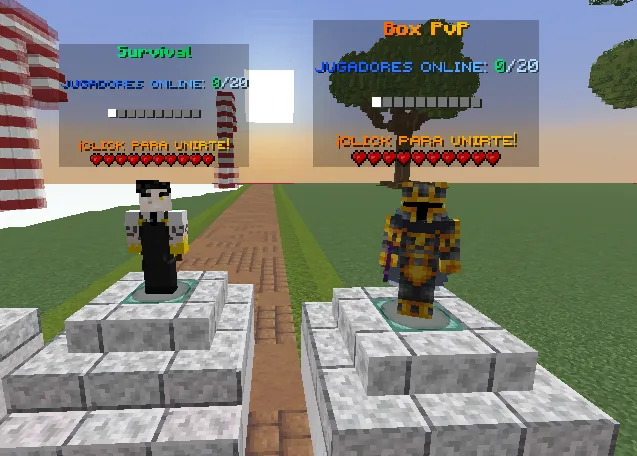

01 / SURVIVALEN DESARROLLO
Survival.
Supervivencia vanilla clásica sin ventajas de pago ni protecciones de terreno. PvP, robo y griefing permitidos. Los intercambios y el resto de las normas de la red deben respetarse.
VANILLA · SIN P2W · SIN CLAIMS

BERLIN NETWORKSERVIDOR MINECRAFT JAVA · SITIO OFICIAL
SERVIDOR MINECRAFT
Información de las modalidades, estado de la red, normas y acceso a nuestra comunidad. Todo en un solo lugar.
ESTADO DE LA RED
Los contadores se actualizan automáticamente cuando las modalidades estén habilitadas para consulta pública.
El total se obtiene sumando los jugadores de Survival y Box PvP, sin contar dos veces el servidor principal.
MODALIDADES
La red contará con dos modalidades. Ambas se encuentran actualmente en desarrollo.
Supervivencia vanilla clásica sin ventajas de pago ni protecciones de terreno. PvP, robo y griefing permitidos. Los intercambios y el resto de las normas de la red deben respetarse.
Modalidad clásica de Box PvP con temática de mobs de Minecraft. Combate y progresión mediante distintas minas inspiradas en diferentes criaturas.

NORMAS OFICIALES
El desconocimiento de estas normas no exime de su cumplimiento. Al entrar a la comunidad, aceptas este código de conducta.
Prohibido faltar al respeto a otros usuarios o al staff.
No enviar más de dos veces el mismo mensaje en el chat global.
Prohibido utilizar clientes o modificaciones que proporcionen ventajas injustas.
Prohibido explotar errores del juego, como romper armor stands dentro de protecciones o duplicar objetos (dupear).
Prohibido engañar a otros usuarios en intercambios o negocios. Durante los cinco minutos posteriores a un intercambio, eliminar al otro usuario también se considera estafa.
Prohibida la publicidad de otros servidores.
Prohibido vender kits o cuentas por dinero real.
Prohibido cualquier acto que intente dañar o afectar directamente al servidor de cualquier forma.
Prohibido cualquier daño indirecto al servidor, por ejemplo, máquinas de lag, daños menos severos o acciones que lo afecten aunque no fuera el objetivo.
Mantén un trato cordial.
Máximo 5 menciones a miembros, 3 a administradores o 1 mención @everyone cada hora.
Prohibido publicar contenido NSFW o gore.
Prohibido compartir enlaces engañosos.
Prohibido invitar a otros servidores por canales o mensajes privados (DM).
El griefing está permitido en Survival. Esta excepción no permite vulnerar protecciones oficiales mediante errores del juego.
COMUNIDAD OFICIAL
Canal oficial de avisos, soporte y comunicación entre los jugadores. Las novedades y actualizaciones de Berlin Network se anunciarán aquí.
Unirse al DiscordCONEXIÓN AL SERVIDOR
En Minecraft Java Edition, abre Multijugador, selecciona Añadir servidor e introduce esta dirección.
Dirección lista para copiar.